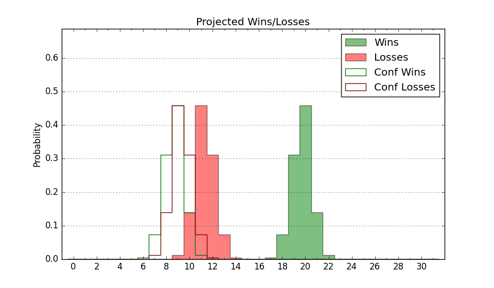

| Home | Game Probabilities | Conferences | Preseason Predictions | Odds Charts | NCAA Tournament |
| City: | Fayetteville, Arkansas | |
| Conference: | SEC (9th)
| |
| Record: | 6-7 (Conf) 17-9 (Overall) | |
| Ratings: | Comp.: 20.7 (20th) Net: 20.7 (20th) Off: 109.4 (62nd) Def: 88.7 (11th) SoR: 53.0 (50th) |
| Remaining | ||||||
|---|---|---|---|---|---|---|
| Date | Opponent | Win Prob | Pred. | |||
| 2/18 | Florida (46) | 74.2% | W 73-65 | |||
| 2/21 | Georgia (131) | 91.0% | W 78-61 | |||
| 2/25 | @ Alabama (3) | 16.0% | L 69-82 | |||
| 2/28 | @ Tennessee (2) | 15.3% | L 58-70 | |||
| 3/4 | Kentucky (43) | 73.0% | W 74-67 | |||
| Previous | Game Score | |||||
| Date | Opponent | Win Prob | Result | Off | Def | Net |
| 11/7 | North Dakota St. (206) | 95.2% | W 76-58 | -13.4 | 6.4 | -7.0 |
| 11/11 | Fordham (145) | 92.2% | W 74-48 | -4.6 | 16.8 | 12.2 |
| 11/16 | South Dakota St. (179) | 93.7% | W 71-56 | -21.7 | 12.7 | -9.0 |
| 11/21 | (N) Louisville (296) | 96.0% | W 80-54 | 0.5 | 8.6 | 9.1 |
| 11/22 | (N) Creighton (13) | 41.8% | L 87-90 | 11.3 | -15.8 | -4.5 |
| 11/23 | (N) San Diego St. (24) | 52.1% | W 78-74 | -0.7 | 8.6 | 7.9 |
| 11/28 | Troy (155) | 92.6% | W 74-61 | 1.5 | -1.0 | 0.6 |
| 12/3 | San Jose St. (99) | 86.6% | W 99-58 | 26.6 | 9.7 | 36.3 |
| 12/6 | UNC Greensboro (121) | 89.5% | W 65-58 | -18.8 | 6.6 | -12.1 |
| 12/10 | (N) Oklahoma (59) | 66.9% | W 88-78 | 25.9 | -15.7 | 10.1 |
| 12/17 | Bradley (70) | 80.5% | W 76-57 | 5.7 | 9.5 | 15.2 |
| 12/21 | UNC Asheville (153) | 92.5% | W 85-51 | 11.5 | 13.2 | 24.7 |
| 12/28 | @LSU (146) | 77.7% | L 57-60 | -18.1 | 4.7 | -13.4 |
| 1/4 | Missouri (55) | 77.3% | W 74-68 | -2.7 | -5.3 | -8.0 |
| 1/7 | @Auburn (30) | 39.1% | L 59-72 | -7.9 | -10.6 | -18.5 |
| 1/11 | Alabama (3) | 39.3% | L 69-84 | -6.5 | -7.5 | -14.1 |
| 1/14 | @Vanderbilt (89) | 62.7% | L 84-97 | 8.6 | -42.7 | -34.0 |
| 1/18 | @Missouri (55) | 50.0% | L 76-79 | -0.4 | -5.2 | -5.5 |
| 1/21 | Mississippi (112) | 88.8% | W 69-57 | -8.4 | 6.1 | -2.2 |
| 1/24 | LSU (146) | 92.2% | W 60-40 | -13.8 | 22.6 | 8.8 |
| 1/28 | @Baylor (12) | 27.3% | L 64-67 | 4.4 | 8.4 | 12.7 |
| 1/31 | Texas A&M (36) | 71.4% | W 81-70 | 4.5 | 2.8 | 7.3 |
| 2/4 | @South Carolina (263) | 90.8% | W 65-63 | -4.7 | -16.2 | -20.9 |
| 2/7 | @Kentucky (43) | 44.3% | W 88-73 | 26.8 | 5.1 | 31.9 |
| 2/11 | Mississippi St. (45) | 74.0% | L 64-70 | 0.7 | -18.0 | -17.3 |
| 2/15 | @Texas A&M (36) | 42.3% | L 56-62 | -12.5 | 5.5 | -6.9 |
| Stats & Trends | |||||
|---|---|---|---|---|---|
| Current | Day | Week | Month | Season | |
| Composite | 20.7 | +0.1 | -0.4 | +1.1 | +2.8 |
| Comp Rank | 20 | -1 | -2 | +1 | +10 |
| Net Efficiency | 20.7 | +0.1 | -0.5 | +1.0 | -- |
| Net Rank | 20 | -1 | -2 | +3 | -- |
| Off Efficiency | 109.4 | +0.1 | -0.2 | +0.1 | -- |
| Off Rank | 62 | -2 | -4 | -10 | -- |
| Def Efficiency | 88.7 | +0.0 | -0.3 | +0.9 | -- |
| Def Rank | 11 | -- | -- | +7 | -- |
| SoS Rank | 37 | -- | +10 | +6 | -- |
| Exp. Wins | 19.7 | +0.0 | -1.3 | -0.8 | +0.7 |
| Exp. Conf Wins | 8.7 | +0.0 | -1.3 | -0.5 | -0.8 |
| Conf Champ Prob | 0.0 | -- | -0.0 | -0.1 | -5.6 |

| Advanced Stats | ||
|---|---|---|
| Stat | Value | Rank |
| Off Eff FG % | 0.550 | 34 |
| Off Ast Ratio | 0.159 | 73 |
| Off ORB% | 0.314 | 67 |
| Off TO Rate | 0.159 | 202 |
| Off FT Ratio | 0.414 | 15 |
| Def Eff FG % | 0.442 | 14 |
| Def Ast Ratio | 0.104 | 7 |
| Def ORB% | 0.220 | 32 |
| Def TO Rate | 0.186 | 39 |
| Def FT Ratio | 0.342 | 251 |